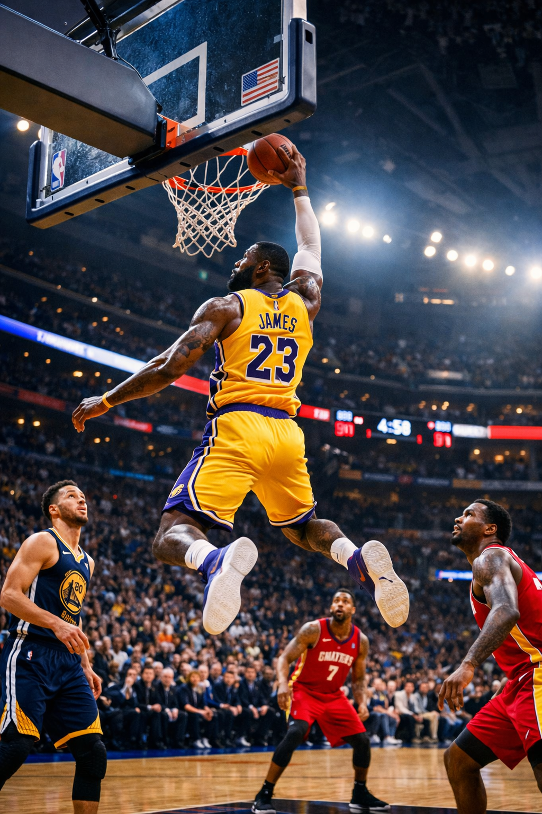

Bienvenue dans le monde du Basketball

Bienvenue dans l'univers du basketball, un sport dynamique et spectaculaire opposant deux équipes de cinq joueurs sur un terrain rectangulaire. Créé en 1891 par le professeur canadien James Naismith, le basketball combine force, vitesse, stratégie et coordination.
Très apprécié dans le monde entier, ce sport est pratiqué par des millions de personnes. Le principe est simple : marquer des points en envoyant le ballon dans le panier adverse tout en défendant son propre panier.
Aujourd'hui, le basketball est devenu l'un des sports les plus populaires au monde, notamment grâce aux grandes compétitions professionnelles et aux joueurs légendaires qui ont marqué son histoire.
Sur ce site, vous découvrirez l'histoire du basketball, ses règles principales, les plus grands joueurs ainsi que les compétitions les plus importantes de ce sport passionnant.
Découvrir le sport